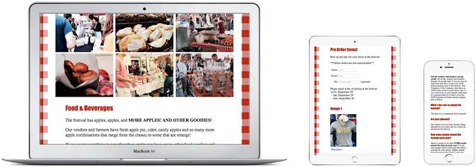
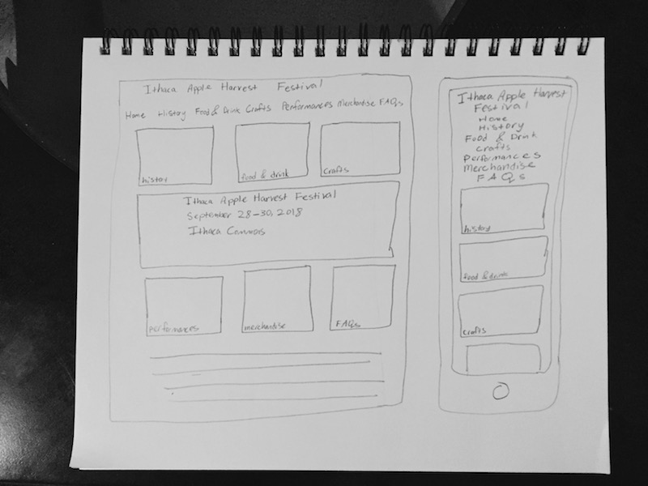
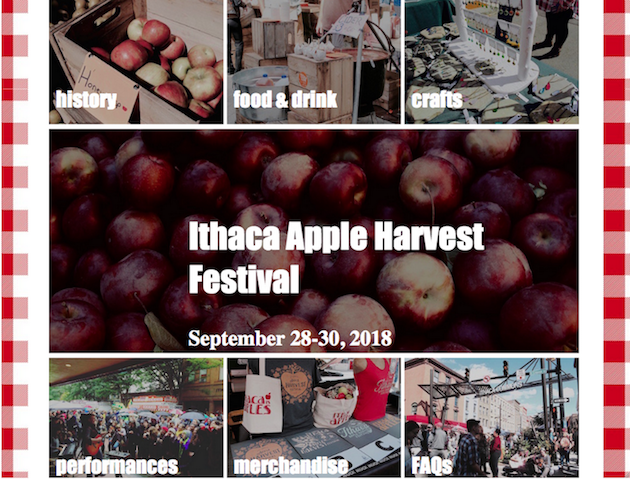

Ithaca Apple Harvest Festival: Bringing Cornellians closer to the Ithaca community through the Ithaca Apple Harvest Festival
Tools Used: HTML, CSS, JavaScript, and Photoshop (the photos that do not have a citation next to them I took myself and edited).

Introduction
This website I coded up for the Ithaca Apple Harvest Festival can be viewed at this link.
The Ithaca Apple Harvest Festival is one of the biggest events of the year in Ithaca. It brings together local farmers, residents, and
Cornell students.
The Ithaca Apple Harvest Festival already has a website and I looked at it to see what I could do to make a website that was
more relevant and engaging for a particular target audience.
Target Audience
My target audience was Cornell undergraduate students who were living on campus. Some of them may have attended the festival before
while others may have no idea what the significance of the festival is.
Persona
Amy Smith
Age: 19
Sophomore at Cornell
Major: Computer Science
"I'm feeling a little stressed out right now because I have prelims coming up. I've never been to the festival before and I'm not really sure if
going to this festival will really be worth it. Though I think I might enjoy it because I do like attending
the Farmer's Market on weekends."
Traits
Sentimentalist
Gets easily frazzled
Likes to arrive on time and stay organized
Needs
Get to the festival quickly and cheaply
Know where nearby ATMs are located to withdraw cash
Learn more about the festival's history and its significance to Ithaca
Needs to be able to view website on her phone
Designing Based off of Persona's Needs
Transportation
Since for my persona, Amy, transportation was an important factor in her attending the festival I decided to make an FAQs page that would have information on the bus routes to and from the festival. I chose to
have bus routes that stop at RPCC and Baker Tower, since those are major bus stops for the two areas of on campus living at Cornell.
ATM Locations
The FAQs page would even hold information about where ATMs were located, which is important to have since festivals usually only accept cash.
Festival's History
A history page was made to hold a short summary about how the festival came about.
I chose not to do a more indepth history because no user would want to read a super long page.
Mobile Friendly
While at the festival a user is most likely going to be using his or her phone to see the performance schedule
and/or list of vendors.
Designing Layout

Sketch of the desktop and mobile homepage
Once I knew what my persona was looking for in a website I started creating sketches for the pages on the desktop and mobile version of my website
User Testing
Using HTML, CSS, and JavaScript I created a website that I then had users interact with by conducting user testing.
Insights Learned from User Testing
The bus routes need to be bolded to make them stand out on the page more, so users can more easily find that information.
The font of the names of performers on the performance page needed to be increased more.
This is because the performer's name was around the same size as the performance time.
With the performer's name larger it creates a form of hierarchy in the information, in which the name of the performer is more important
than the time.
To allow users to find answers to their particular questions more quickly all of the questions should be placed at the top of the FAQs page. Then when
users click on a certain question they will automatically be taken to the answer of that question. This is more efficient than having users scroll through answers
to questions that do not apply to them.
I learned that for users with certain dietary considerations they would need to be able to look more into the vendors to see if they had options for them
that they could eat. Thus, I decided to include links to the website or Facebooks of vendors.
A user suggested I change the wording on the "food and drinks page" because when he read "The festival has apples, apples, and more apples!" he made the
assumption that only apples were served at the festival, which is not true. There are different type of cuisines at the festival and food that doesn't contain
apples. Thus, I decided to fix my wording by making it "The festival has apples, apples, and more apples! and other goodies!"
Additional Design Change for the Homepage

I decided to put the photo that says "Ithaca Apple Harvest Festival" and has the dates to be at the top. The reason is that I felt like the way it was originally did not flow correctly and it didn't look like a traditional website. Since on websites usually the main image is at the top and acts as a banner for the home page. Also, I considered the design principle of proximity when it came to the smaller images in collage. The reason is that the way I had it it was that I broke up items that are related to each other. They're related to each other because they are all images that lead to other pages on the website. By having them close together it tells the users that these buttons have some type of relation to each other, which in this case is function.
Final Product
I updated my designs based off of the insights I had learned from user testing.
The website I coded up with HTML, CSS, and JavaScript can be viewed at this link.